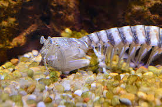
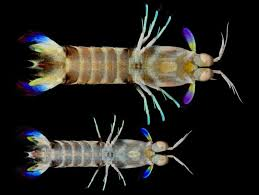
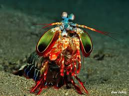
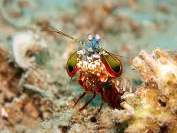
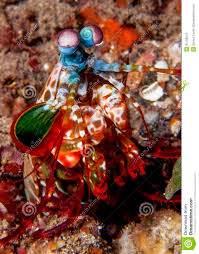

Os estomatópodes são predadores ativos que caçam presas com o auxílio de um sentido de visão muito apurado e capaz de interpretar polarização no espectro ultravioleta e infravermelho). Apresentam uma grande variação de tamanho, que pode ir de poucos milímetros até aproximadamente 40 cm nas espécies maiores. Eles vivem em fundo consolidado, lodoso ou ainda arenoso, onde cavam seus buracos ou aproveitam-se dos orifícios deixados por outros animais para neles se instalar. São animais exclusivamente carnívoros, alimentando-se de camarões, caranguejos, moluscos, peixes e até mesmo outros da mesma ordem. O segundo par de patas, muito desenvolvido, é usado tanto para atacar a presa como para se defender. O urópodo, quando aberto, também funciona para defesa, como um escudo, fechando a galeria em que o animal esteja instalado. A fêmea desova no local onde se abriga e, em caso de perigo, enrola os ovos como uma bola, prendendo-os junto ao corpo até encontrar um abrigo mais protegido.
Classificação Científica
- Reino: Animalia
- Filo: Arthropoda
- Subfílo: Crustacea
- Classe: Malacostraca
- Subclasse: Hoplocarida
- Ordem: Stomatopoda
Bathysquilloidea
- Bathysquillidae
- indosquillidae
Gonodactyloidea
- Alainosquillidae
- Hemisquillidae
- Gonodactyllidae
- Odontodactyllidae
- Protosquillidae
- Pseudosquillidae
- Takuidae
Erythosquilloidea
- Erythosquillidae
Lysiosquillidea
- Coronididae
- Lysiosquillidae
- Nannosquillidae
- Tetrasquillidae
Squiloidae
- Squilidae
Eurysquilidae
- Eurysquillidae
Parasquiloidae
- Parasquillidae
Como são conhecidas e suas caracteristicas
Também conhecidas como esquilas ou lagosta-boxeadora, espalhadas pelas costas dos mares tropicais e subtropicais. Além das patas, elas apresentam uma silhueta característica, devido ao grande comprimento aparentemente de seu abdómen. Os ovos ficam ligados por uma massa gelatinosa que a mãe carrega contra o ventre até que eclodem, limpando-os sem parar. São animais que apresentam comportamentos sociais muito variados, desde ameaças visuais contra predadores até comportamentos de côrte. De acordo com a anatomia da sua pata raptorial é possível distinguir entre dois grupos funcionais, as perfuradoras (spearers) ou as esmagadoras (smashers), sendo que cada um dos tipos apresenta sua própria variação comportamental e até mesmo de habitat.
Particularidades
As maiores esmagadoras, tais como exemplares de Odontodactylus scyllarus, são capazes de desferir um dos mais rápidos e violentos golpes do reino animal, um soco que pode apresentar a velocidade de um tiro calibre .22 (equivalente a 720km/h) e uma força de impacto de 60 kg/cm². Essa força esmagadora é a responsável pelo seu título de "lagosta-boxeadora" e é capaz de facilmente quebrar a carapaça de um caranguejo, as conchas duras e calcificadas de gastrópodes ou até mesmo quebrar o vidro reforçado de um aquário. Estomatópodes podem ser encontrados em quase todo o litoral brasileiro, mas não são animais fáceis de se observar pelos seus hábitos mais furtivos. Devem ser manuseados com muita cautela pois são animais preparados para se defender com força, caso sejam incomodados.
Descobetas Científicas
Mas no ano passado, Hanna Thoen, da Universidade de Queensland, descobriu que eles são muito piores em discriminar cores , são muito piores em discriminar cores , são muito piores em discriminar cores , são muito pioresem discriminar cores, eles são muito piores em discriminar cores do que a maioria dos outros animais! Eles parecem usar seus mais de dez receptores para reconhecer as cores de uma maneira única, muito diferente de outros animais, mas estranhamente semelhante a alguns satélites. Thoen se concentrou nos receptores que detectam cores do vermelho ao violeta - o mesmo arco-íris que podemos ver. Mas esses animais ultra-violentos também podem ver ultravioleta (UV). O camarão mantis, por exemplo, possui seis fotorreceptores dedicados a essa parte do espectro, cada um sintonizado em um comprimento de onda diferente. Esse é o sistema de detecção de UV mais complexo encontrado na natureza. Michael Bok, da Universidade de Maryland, queria saber como funciona.
Sistema de visão que a diferencia
Esses animais possuem o mais complexo sistema de visão de cores do mundo animal, pois enxergam 12 cores primárias, correspondentes aos 12 pigmentos distintos presentes em sua retina. Nossos olhos possuem três tipos desses receptores - que correspondem à luz azul, verde e vermelha -, que nos permitem perceber o espectro de cores que vemos. Os cães contam com apenas dois tipos de cones (verde e azul), e é por isso que eles vêm tons de azul, verde e um pouco de amarelo. Muitos anfíbios, répteis, aves e insetos possuem quatro tipo de cones, o que significa que espécies dessas classes conseguem ver cores que o nosso cérebro é incapaz de processar.
Algumas espécies específicas de borboletas e possivelmente pombos possuem cinco cones de percepção de cor, o que aumenta ainda mais a quantidade de pigmentos que eles são capazes de perceber. O sistema de visão dos estomatópodes possui doze cones sensíveis à luz e outros quatro que filtram a luz (16 cones no total), o que lhes permite ver cores polarizadas e imagens multiespectrais. Como cada cone pode ver cerca de 100 cores, os estomatópodes são capazes de ver 1024 cores, ou seja, 1 septilhão de cores. Em comparação, o olho humano vê 106 cores, ou seja, 1 milhão de cores apenas. A visão dos estomatópodes é sensível à luz ultravioleta, mas ainda é desconhecido se ela pode distinguir a luz infravermelha.
Bibliografia
WikipédiaImagens Google - Stomatopoda
National Geographica